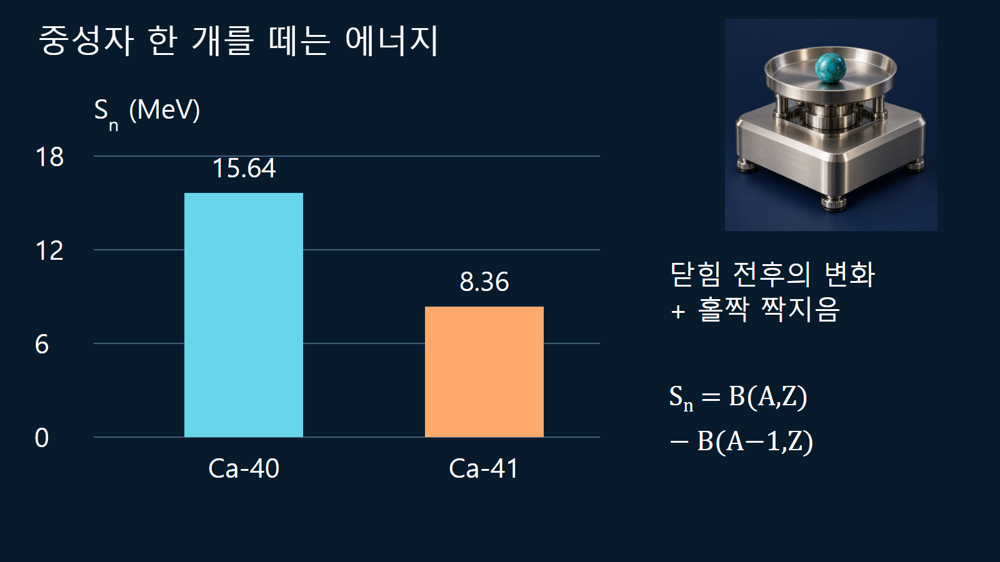
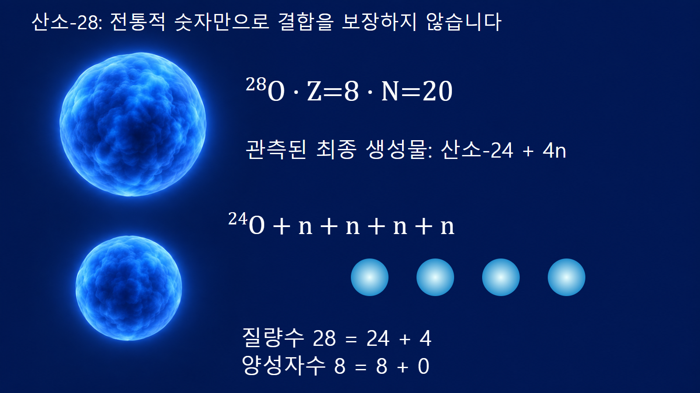

원자와 원자핵의 기초 · 016
마법수
양성자수 또는 중성자수가 닫힌 핵껍질을 이루어 특별한 안정성을 보이는 수
마법수는 양성자 또는 중성자가 몇 개 채워졌을 때 껍질 간격과 추가 결합의 효과가 두드러지는지를 나타냅니다. 총 질량수에 붙이는 이름이 아니며 방사성붕괴가 없다는 보증도 아닙니다. 분리에너지·들뜬상태·전이 세기 등 서로 다른 증거를 함께 확인해야 합니다.
숫자 목록보다 먼저 구분할 두 계열
전통적인 핵껍질의 마법수로 2, 8, 20, 28, 50, 82가 널리 알려져 있으며 중성자에서는 126도 대표적입니다. 이 숫자는 양성자수 Z 또는 중성자수 N에 적용합니다. 질량수 A=Z+N이 우연히 목록에 있다고 해서 마법핵이 되는 것은 아닙니다. 양성자 계열과 중성자 계열이 모두 닫힌 껍질이면 이중 마법핵이라고 부릅니다. 확인된 중성자 마법수 126을 이미 관측된 양성자 껍질 닫힘인 것처럼 같은 표에 묶어 단정하지 않습니다.
닫힌 껍질이 남기는 여러 실험 신호
큰 준위 간격을 사이에 두고 다음 핵자를 넣으면 결합의 변화가 이전과 달라집니다. 그래서 핵자 분리에너지의 체계적인 변화가 주요 신호가 됩니다. 짝수-짝수 핵에서는 첫 2+ 들뜬상태의 에너지가 상대적으로 높고 전기 사중극 전이 세기가 작은 경향도 껍질 닫힘의 근거로 사용합니다. 단, 각 신호는 짝지음, 변형과 다른 구조효과의 영향도 받습니다. 관측량 하나만 보고 어떤 중성자수에서도 같은 껍질 간격이 유지된다고 결론짓지 않습니다.
| 관측량 | 껍질 닫힘에서 찾는 신호 | 함께 구분할 효과 |
|---|---|---|
| 분리에너지 | 닫힘 전후의 뚜렷한 변화 | 홀짝 짝지음·질량 오차 |
| 첫 2⁺ 에너지 | 짝수-짝수 핵의 상대적으로 높은 준위 | 변형·집단 운동 |
| 전이 세기 | 약한 집단 사중극 전이 경향 | 배치 혼합·유효전하 모형 |
| 붕괴 가능성 | 별도로 Q값과 경로 판단 | 마법수만으로 안정성 보장 불가 |
납-208에서 Z와 N을 따로 확인하는 예시
납의 원자번호는 82이므로 납-208의 중성자수는 N=208−82=126입니다. Z=82와 N=126이 각각 전통적인 닫힌 껍질에 해당하므로 납-208은 대표적인 이중 마법핵입니다. 같은 원소인 납-206은 Z=82이지만 N=124입니다. 양성자 껍질 조건은 같아도 중성자 계열의 점유는 다릅니다. 두 핵을 비교할 때에는 총 질량수의 크기만 비교하는 대신 어느 종류의 껍질에서 차이가 나는지 먼저 확인합니다.
칼슘의 중성자 분리에너지 계산
중성자 한 개를 떼는 데 필요한 에너지는 Sn(A,Z)=B(A,Z)−B(A−1,Z)로 계산할 수 있습니다. 교육용으로 같은 KAERI 구자료의 결합에너지를 사용하면 칼슘-39, -40, -41은 각각 약 326.410777, 342.051954, 350.414654 MeV입니다. 따라서 칼슘-40에서 한 중성자를 떼는 에너지는 15.641177 MeV, 칼슘-41에서는 8.362700 MeV입니다. N=20을 채운 칼슘-40 다음에 추가된 중성자가 상대적으로 덜 단단히 묶인 경향을 볼 수 있습니다. 이 두 값의 차이에는 홀짝 짝지음 효과도 포함되므로 그 차이를 순수한 단일입자 껍질 간격으로 동일시하지 않습니다. 정밀 작업에서는 최신 평가질량을 사용하며, 여기서는 1995 질량평가에 기반한 공개자료를 일관되게 사용한 검산 예시입니다.

산소-28이 보여 준 전통적 마법수의 한계
산소-28은 Z=8, N=20이므로 전통적인 목록만 대입하면 두 계열 모두 닫힌 껍질을 기대할 수 있습니다. 그러나 2023년 관측을 설명한 DOE의 2024년 자료에 따르면 이 핵은 결합된 상태로 유지되지 않고 산소-24와 중성자 네 개로 붕괴했습니다. 질량수는 28=24+4, 양성자수는 8=8+0으로 보존됩니다. 이 결과는 중성자가 매우 많은 산소에서 전통적인 N=20 껍질 효과가 그대로 유지된다고 볼 수 없음을 보여 줍니다. 중성자와 양성자의 비율이 크게 달라지면 유효 상호작용과 준위 순서도 바뀔 수 있습니다.

추가 결합과 방사성 안정성을 구분하는 이유
껍질이 닫히면 주변 핵종의 평균 경향에 비해 추가 결합이 나타날 수 있지만, 가능한 모든 붕괴 경로가 막히는 것은 아닙니다. 베타붕괴나 입자 방출의 가능성은 부모핵과 딸핵의 에너지 차이로 따로 판단합니다. 중성자가 과도하게 많은 핵에서 결합 한계에 도달했는지, 껍질 간격이 줄어들었는지, 새로운 닫힘이 생겼는지는 서로 구분할 문제입니다. 마법핵이라는 용어와 안정 동위원소라는 용어를 같은 뜻으로 사용하지 않습니다.
핵자료 해석에서 마법수를 쓰는 순서
먼저 Z와 N을 계산하고, 비교할 동위원소들의 분리에너지와 들뜬상태 자료를 같은 정의로 정리합니다. 이어서 짝지음과 변형의 영향을 살펴 껍질 효과가 여러 관측량에서 일관되는지 확인합니다. 이 절차는 핵질량 모형의 잔차, 핵분열생성물의 구조효과, 핵합성 경로에서 핵종이 머무는 구간을 이해하는 데 도움이 됩니다. 실제 생성수율이나 반응률을 구할 때에는 마법수 목록 대신 평가된 반응·붕괴자료와 계산 모형을 사용합니다.
기억할 기준
마법수는 핵종의 조성을 점검하는 유용한 출발점입니다. 핵종도에서 양성자와 중성자를 따로 세고, 분리에너지와 분광 신호로 추가 안정성의 근거를 확인해야 합니다. 납-208의 명확한 닫힘, 칼슘 분리에너지의 변화, 산소-28의 비결합성은 서로 다른 종류의 증거입니다. 이런 차이를 구분하면 숫자 목록을 암기하는 데서 벗어나 실제 핵구조 자료를 읽을 수 있습니다.